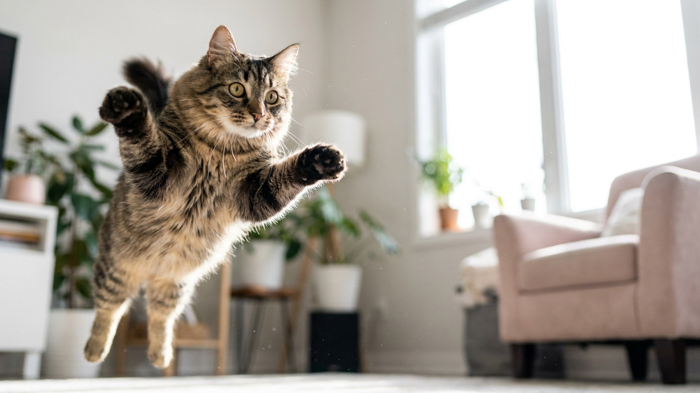

Кошка сходила в лоток, выскочила оттуда пулей и понеслась по коридору с прижатыми ушами, будто её кто-то догоняет. Через минуту сидит и умывается как ни в чём не бывало. Эти «туалетные гонки» знакомы почти каждому владельцу — и у них есть сразу несколько логичных объяснений. Разбираем, что за этим стоит и когда стоит присмотреться внимательнее.
🐾 У вашей кошки так же?
Расскажите в AnimaLife, как ведёт себя ваш питомец, — приложение объяснит причину и даст пошаговый план. Бесплатно, без записи к специалисту.
Разобрать свой случай → Разобрать в MAX →
У вас iPhone? AnimaLife есть в App Store
Сценарий один и тот же: кошка резко покидает лоток и переходит в бешеный галоп — круги по комнате, прыжки на диван, спринт по коридору. Иногда с коротким мявом «на бегу». Длится это секунды, максимум пару минут, и заканчивается так же внезапно.
У явления даже есть шутливое английское название — «poo-phoria», «туалетная эйфория». Точного научного ответа нет, но у поведения несколько правдоподобных причин, и обычно работают сразу несколько.
Если кошка бодра, ест как обычно, а гонки — это весёлый ритуал пару раз в день, поводов для тревоги нет. Это вариант нормального кошачьего поведения.
А вот на что стоит обратить внимание спокойно, без паники:
Если замечаете такое сочетание — стоит показать кошку ветеринару: иногда за резким дискомфортом после туалета стоят вопросы здоровья, которые лучше исключить заранее.
Мешать «гонкам» не нужно — это естественная разрядка. Лучше помочь кошке тратить энергию осмысленно и убрать бытовые раздражители вокруг лотка.
🐾 Хотите понять, что кошка говорит вам?
Опишите ситуацию или пришлите видео в AnimaLife — AI разберёт поведение вашего питомца и подскажет, что делать. Бесплатно, ответ за минуту.
Разобрать поведение → Разобрать в MAX →
У вас iPhone? AnimaLife есть в App Store
🐾 Понравился разбор?
Подпишитесь на канал — каждый день разбираем по одному тревожному симптому у кошек и собак: что в пределах нормы, а когда пора к врачу. Подпишитесь, чтобы не пропустить разбор, который может спасти здоровье вашего питомца.
Материал носит информационный характер и не заменяет очную консультацию ветеринара.